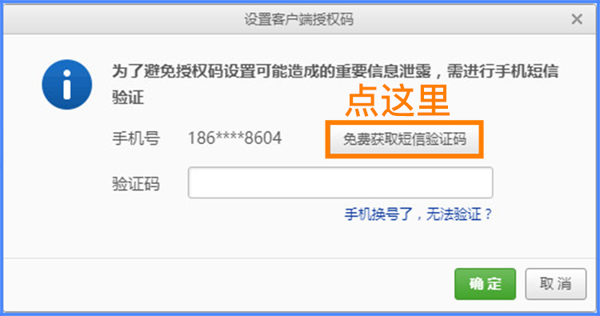
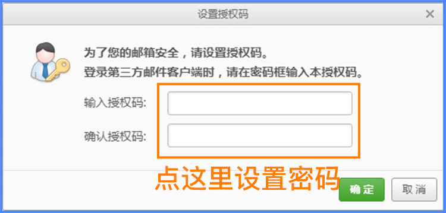
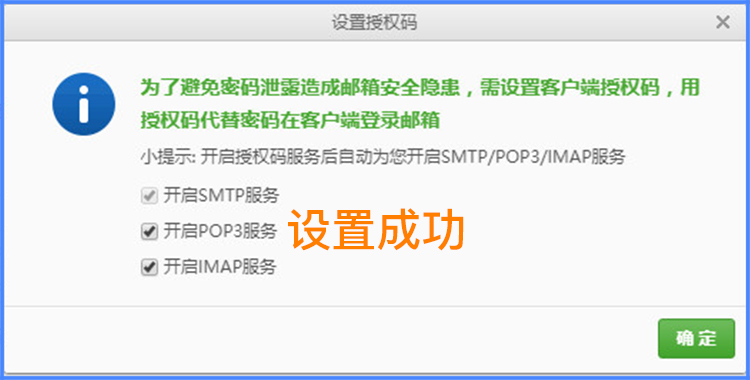
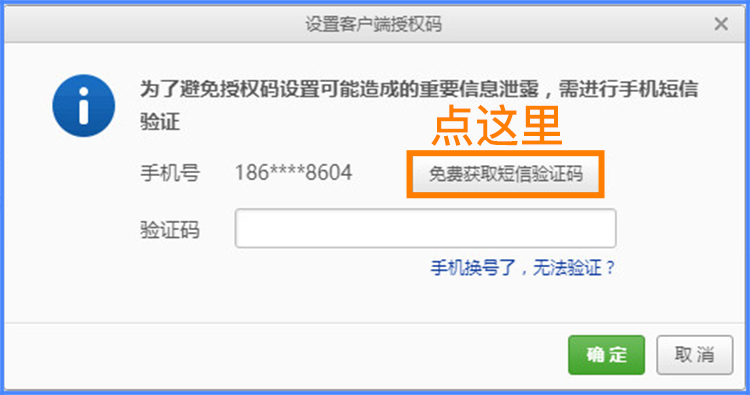
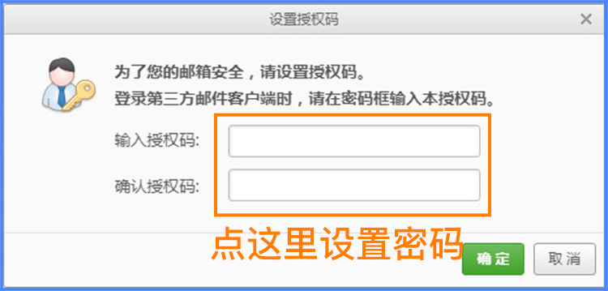
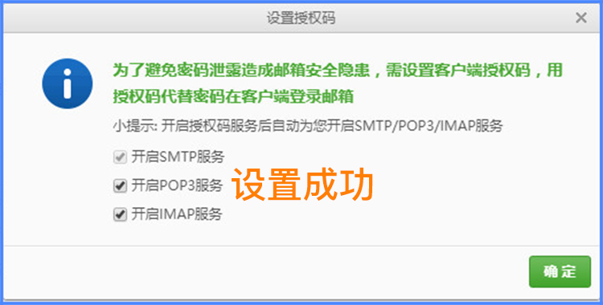

网易邮箱如何开启POP3服务？
首先登陆邮箱，然后打开“设置->POP3/SMTP/IMAP”

进入客户端授权密码，点击开启

选择“开启POP3服务”获取手机验证码，
自行设置客户端授权码，下次登录时，使用客户端授权码登录即可。
 首先登陆邮箱，然后打开“设置->POP3/SMTP/IMAP”
进入客户端授权密码，点击开启
选择“开启POP3服务”获取手机验证码，
自行设置客户端授权码，下次登录时，使用客户端授权码登录即可。
 